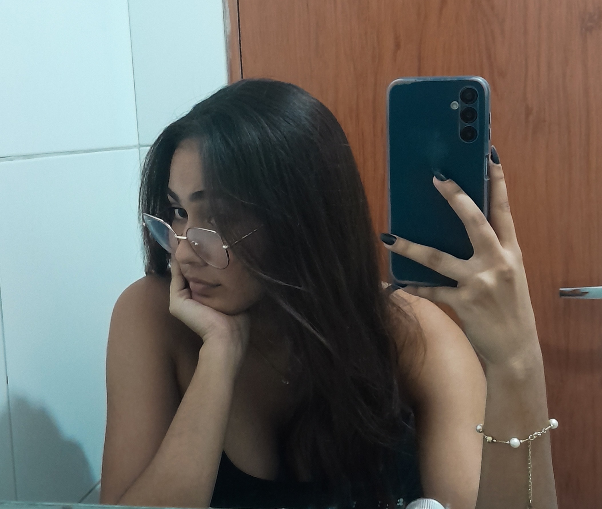

Oie! Meu nome é Lary!
Esse é meu site pessoal e por aqui eu vou mostrar um pouco sobre mim e sobre os meus hobbies!
 Entre em contato comigo!Sobre Mim
Meu nome é Larissa, tenho 17 anos e nasci no dia 31/03/2008, em Ceará-Mirim. Estou cursando o 3° ano do ensino médio no IFRN - Campus CM . Sou apaixonada por arte, em especial as feitas à mão, e amo presentear as pessoas que eu amo com elas. Sei fazer de tudo um pouco e meus hobbies favoritos são: Passar tempo com minha família e amigos; Artesanato; Pintura; Escutar músicas (inclusive, eu escuto de tudo e não tenho música favorita); Ler livros de romance, fantasia, e suspense; Cozinhar e inventar receitas; Assistir animes junto com meu namorado; Comer um docinho...
Espero que você goste de conhecer um pouco mais sobre mim e as coisas que eu mais amo fazer!
Curiosidades Sobre Mim
Aprendi inglês de maneira autodidata. Ainda não domino 100% o idioma, mas pretendo aprender vários outros do mesmo jeito que aprendi inglês.
Eu fiz aula de Musica e Canto durante 6 anos mas nunca me interressei de verdade por nenhum instrumento a não ser o teclado. Começei a aprender recentemente e amo!
Sou apaixonadissima por criar presentes feitos a mão e escrever cartas! Pra mim é uma das melhores demonstrações de amor que temm!
Amo ler livros. A minha saga favorita é "A maldição do tigre". É quase que uma tradição viciar nessa saga. Primeiro foi a favorita da minha mãe, depois a da minha prima mais velha, depois a minha e tenho certeza que vai ser a da minha irmã mais nova também!
Adoro crianças, especialmente bebês. Tenho uma priminha de 2 anos que se chama "Artemísia" e meu apelido favorito é "Sassai" o que ela me deu quando aprendeu a falar e me chama assim desde então. AMO DE PAIXÂO!
Um Causo
Uma vez, no final de 2023, estavamos eu e uma prima minha chamada Priscila caminhando/explorando outras partes da cidade. Achamos um conjunto de casas em um lugar que era bem alto (ja era no fim da cidade, perto dos matos KKKK) e tinha uma vista BELISSIMA pra um lugar que eu acho que era uma fazenda. Nisso de olhar a vista, a gente bateu o olho em uma arvore meio isolada na grama baixa la no longe e a gente cismou que ia fazer um pique-nique por lá. Qual era o problema? A gente nao fazia a menor ideia de como chegar na arvore, então tivemos a seguinte ideia: "Por que não chamar Júlio (meu namorado) pra levar a gente pra lá as 6h da manhã?" e ele aceitou, por incrivel que apreça. No outro dia, partimos para a nossa aventura. Nós tinhamos uma ecobag, 3 biscoitinhos clube social, danoninho, uma garrafa de água de 2l e um sonho. Depois de andar um monte, a gente finalmente chegou na trilha que levava até a nossa árvore (supostamente) e entramos no meio do mato. Júlio ia guiando a gente andando lá na frente enquanto eu e Priscila ficvamos reclamando do calor, dos matos, dos espinhos e de ter ido de shorts e chinelo havaianas fazer uma trilha. Depois de um tempo, Priscila cochichou pra mim "como que eu venho pro meio do mato com um desconhecido? Tu confia mesmo nele ne Larissa, a gente ta no fim do mundo confiando nele". Nesse tempo, eu e Júlio ainda não namoravamos de verdade, então ele no tinha muito contato com os meus parentes e tudo mais. Mas eu ja conehcia ele a um bom tempo, então eu disse "Confio sim, e qualquer coisa, nos somos duas contra um, né?". Tempo depois, a gente chegou em um lugar que tinha uma mesa em baixo de uma árvore,mas pra entrar nesse lugar precisavamos passar por uma cerca de arame, e assim fizemos. Tomamos nosso café por lá mesmo e Júlio começou a contar que, naquele lugar, tinhas homens que quase ja tinham matado ele e alguns amigos dele, porque aquele terreno era privado. Nessa hora, eu e priscila nos olhamos e eu já sabia o que ela queria dizer "Vamo embora daqui agora" e assim a gente fez. Júlio passou a cerca de arrame primeiro e eu e priscila ficamos pra trás tentando passar e quando conseguimos, estavmos SOZINHAS NO MEIO DO MATO FECHADO. Onde Júlio estava? não faziamos ideia, então tivemos as seguintes reações: priscila começou a xingar Júlio de todas as formas e eu começei a rir do desespero dela ja pensando que ia esganar Júlio quando ele aparecesse denovo. Depois de achar o lado certo do caminho (que era a coisa mais facil do mundo), adivinha quem tava esperando a gente na maior cara de pau do mundo? Ele não sabia de nenhum dos nossos cochichos, então tudo o que ele fazia na inocência, virava um plano de fuga na nossa cabeça. Resultado de tudo: não achamos a árvore, eu queimei o pé em uma ortiga, pensamos que iamos pra vala, quase desmaiamos de tanto calor, Júlio quase leva uma pedrada de graça e nunca mais voltamos pra lá. Hoje em dia nós tres morremos de rir dessa historia porque Júlio não sabia de nada enquanto eu e Priscila planejamos um monte a cada passo que ele dava KKKKKKK.
Meu Portfólio
Fiz essa caixa inspirada no barco "going mary" do anime "One Piece". Foi um presente de aniversáio pro meu namorado!
Esse foi o bolo que eu fiz pro meu aniversário de 17 anos!
Pintei essa tela junto com meu namorado!!
Essa foto foi de quando eu participei da Mostra de dança e teatro na minha escola. Amo maquiagem, então aproveitei pra fazer essa azul e AMEI!
Minha Rotina Semanal
| Dia | Manhã | Tarde | Noite |
|---|---|---|---|
| Segunda | Academia | Escola | Casa |
| Terça | Academia/ Escola | Escola | Casa |
| Quarta | Academia | Escola | Casa |
| Quinta | Academia | Escola | Corrida |
| Sexta | Academia | Escola | Casa |
| Sábado | Casa dos meus pais e academia | Lazer | Lazer |
| Domingo | Casa do meu namorado | Lazer | Lazer |